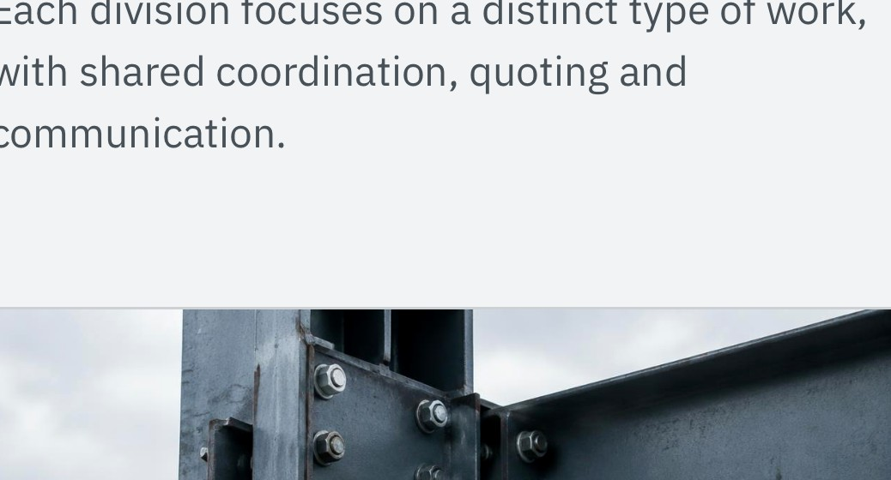
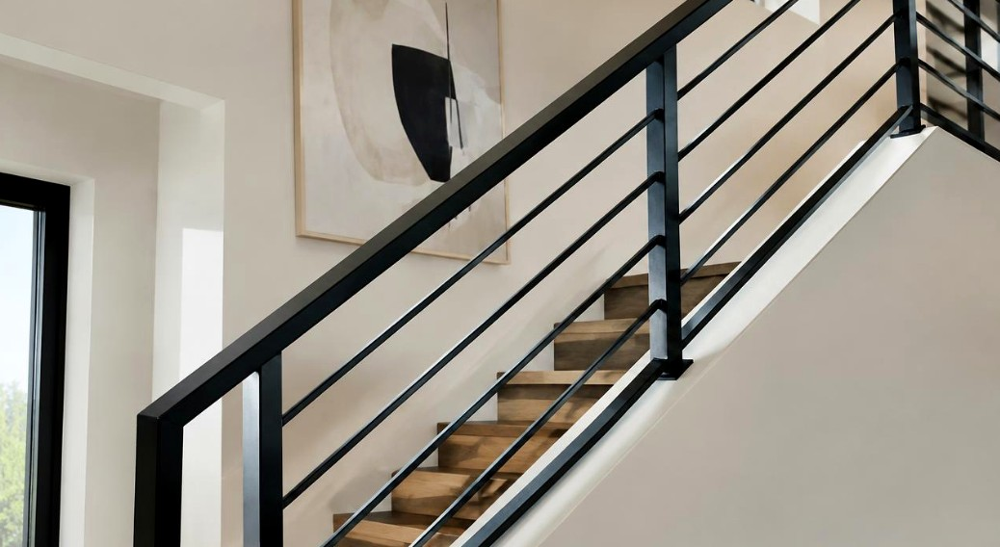

CONSTRUCTION WELDING
Construction Welding
Dependable welding and metalwork support for construction, renovation, and commercial projects throughout the Lower Mainland of British Columbia.
Explore Construction Welding →CONSTRUCTION SUPPORT · CUSTOM METALWORK · WELDING & FABRICATION
Reliable welding, custom fabrication, and architectural metalwork for contractors, builders, and commercial projects throughout Vancouver and the Lower Mainland of British Columbia.
OUR SERVICES
Each division focuses on a distinct type of work, with shared coordination, quoting and communication.

CONSTRUCTION WELDING
Dependable welding and metalwork support for construction, renovation, and commercial projects throughout the Lower Mainland of British Columbia.
Explore Construction Welding →
ARCHITECTURAL METALWORK
Custom metalwork and welding solutions for builders, renovation contractors, designers, and property owners seeking clean finishes and dependable project coordination.
Explore Architectural Metalwork →
WELDING & FABRICATION
Practical fabrication and welding solutions designed around your specifications, project requirements, and intended application.
Explore Welding & Fabrication →INDUSTRIES & APPLICATIONS
Project suitability depends on scope, location, access, specifications, and available capabilities. Every enquiry is reviewed individually.
WHY SENSERIO
Understand the scope, requirements, and expectations before work begins.
Review materials, dimensions, fit, finish, and project requirements.
Keep scope, timing, and next steps clear throughout the process.
Find workable solutions for real project conditions and constraints.
Adapt the approach to the requirements, materials, and intended use.
HOW PROJECTS MOVE
Exact steps depend on project scope, availability, and agreed requirements.
Share the project, requirements, and relevant information.
Review scope, materials, dimensions, and access.
Confirm the proposed approach, quotation, and next steps.
Coordinate the agreed work and handover.
PROJECT EXAMPLES
These are illustrative images of the types of work that may be discussed, not a gallery of completed Senserio projects.
Illustrative construction steel connection.
Illustrative railing and architectural metal details.
Illustrative welding process and metal finish.
SERVICE AREA
Availability and project suitability are confirmed for each enquiry.
LET’S TALK ABOUT YOUR PROJECT
Tell us about your welding or metalwork requirements. Share the scope, dimensions, materials, and timeline, and we can discuss the next steps.